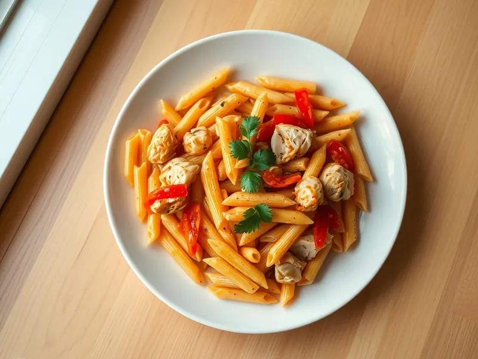

Фото: Иллюстрация ИИ, Cloudflare Workers AI
Макароны с курицей и овощами на сковороде
Перья с курицей, болгарским перцем и морковью в лёгком томатном соусе
30 мин3 порц.557 ккал на порциюБ 35 · Ж 13 · У 74Интернациональная кухня
Продукты на 3 порц.
- Макароны270 г
- Куриное филе300 г
- Перец болгарский1 шт
- Морковь1 шт
- Лук репчатый1 шт
- Чеснок2 зуб.
- Томатная паста1,5 ст. л.
- Растительное масло2 ст. л.
- Соль2 ч. л.
- Вода3150 мл
Как готовить
- Поставьте 3 л воды на сильный огонь. Курицу нарежьте полосками, лук и перец соломкой, морковь натрите на крупной тёрке.
- Разогрейте масло на сковороде на сильном огне и обжарьте курицу 5 минут, пока кусочки не побелеют и не зарумянятся.
- Посолите кипящую воду и сварите перья по инструкции на упаковке, обычно 9-10 минут.
- К курице добавьте лук и морковь, жарьте на среднем огне 4 минуты, затем перец и чеснок ещё 3 минуты, пока овощи не станут мягкими.
- Вмешайте томатную пасту и 150 мл воды, посолите и тушите 3 минуты.
- Откиньте макароны, переложите в сковороду, перемешайте и прогрейте 1-2 минуты.
Совет. Для скорости возьмите пакет замороженной овощной смеси вместо свежих овощей, жарить её нужно 5-6 минут без разморозки.